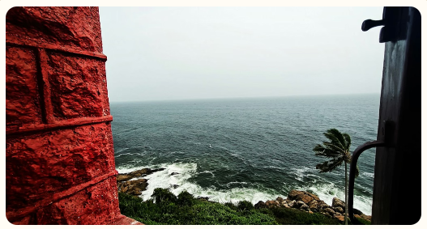
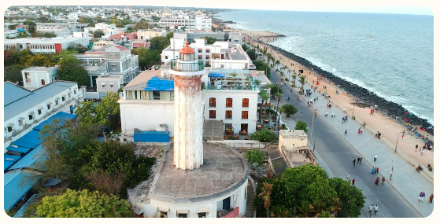
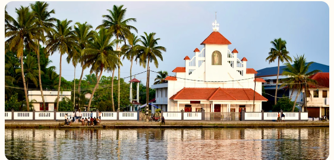
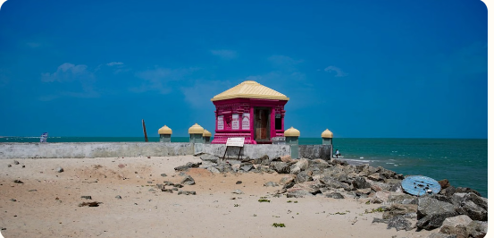
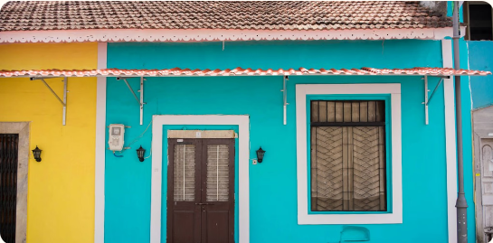
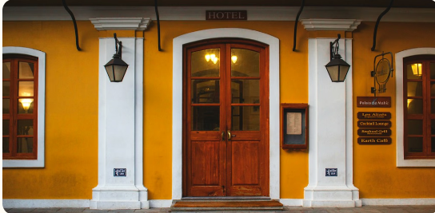

History in motion
Explore curated video collections on YouTube.
It is a tide of ancient trade, Tamil kingdoms, European rivalry, freedom movements, and a living coastal culture. Follow the dates. Meet the places. Test what you discover.
Begin the Journey ↓
The Periplus of the Erythraean Sea mentions Poduke, commonly connected with Arikamedu. Archaeology revealed imported Roman pottery and a busy trading station.

Pallavas, Cholas, Pandyas, the Vijayanagara Empire, and the Nayaks of Gingee each shaped the region before European colonial power became dominant.

The French East India Company established a trading centre. François Martin developed the town and its commercial links, creating the foundation of the settlement’s urban character.

Dutch and British forces repeatedly captured Pondicherry during European wars. Treaties returned it to France, and French control resumed after the final British occupation ended in 1816.

In the Kizhur vote, 170 of 178 representatives favoured merger. Administration transferred de facto on 1 November 1954; legal transfer followed in 1962.

Puducherry’s Tamil foundations, colonial streets, multilingual life, temples, churches, ashrams, markets, and seafront make history visible in everyday life.
Explore curated video collections on YouTube.
5 interactive games to challenge your knowledge and discover your vibe.
Which event happened first?
"Poduke is a modern city built by the British."
Which image represents the ancient port of Arikamedu?
Pick your ideal weekend in Pondy:
Unscramble the official name of the city:
Hover over the cards to reveal the secrets of Pondicherry's unique urban design.